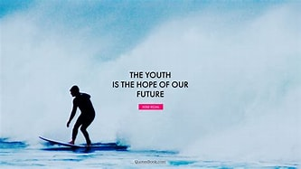

KYP A Global Platform For The Youth
Empowering The Youth By Kigenyi Abdul Rahman
The youth need to be treated as the first priority for our nation. They are the future legends we are left with at this world error!
Comforting a youth doesnt need buying them giftss but only to let them enjoy their life under your guidence!
Their choices must be respected but as well looked through to encourage proper growth and mentoring.

The treasure of the youth is their life memories so let them enjoy their life tough with supervision. This enables them to even refresh their minds.

Fellow youths can help out to empower their fellows, being that they are close friends and near to each other.
We shouldn't ignore their talents because they are the future that we are left with and they must be just our beloved!
That is quite true! The youth must find ways of getting their talents relvealed at all costs no matter what happens!
As it is said from Kigenyi Abdul Rahman that the more time spent on the youth the more times our future is managed!
Back To Top